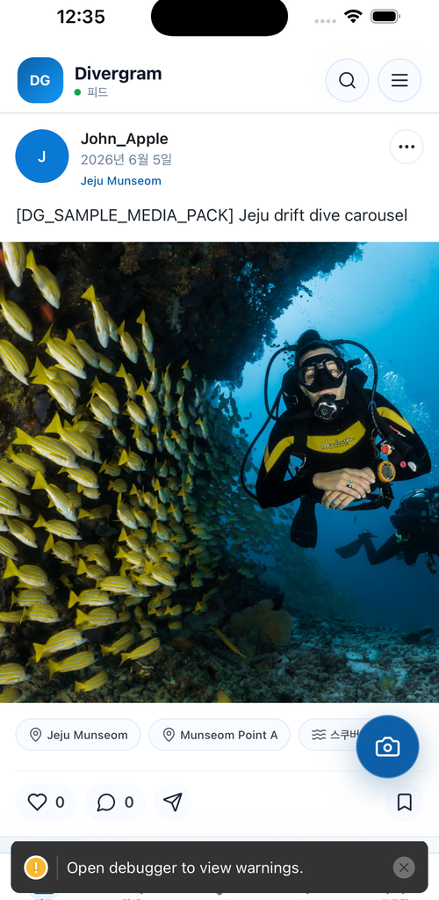
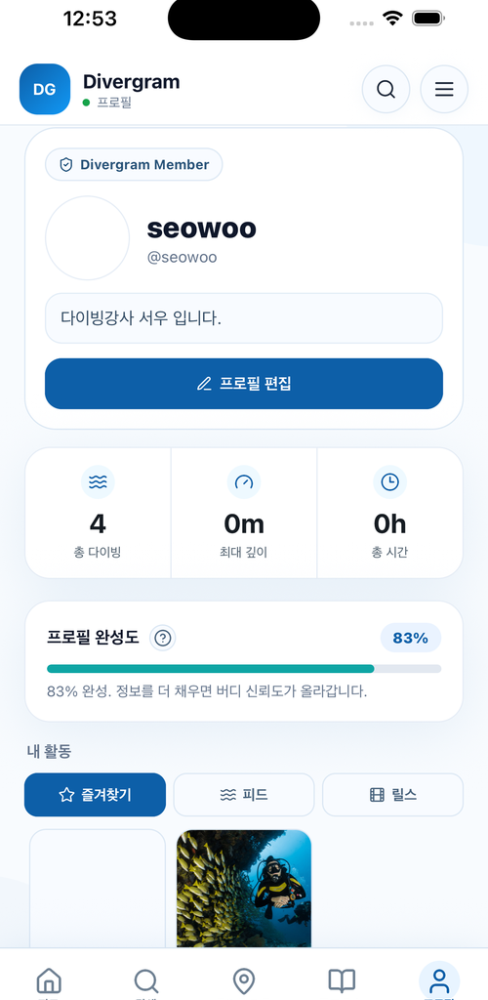
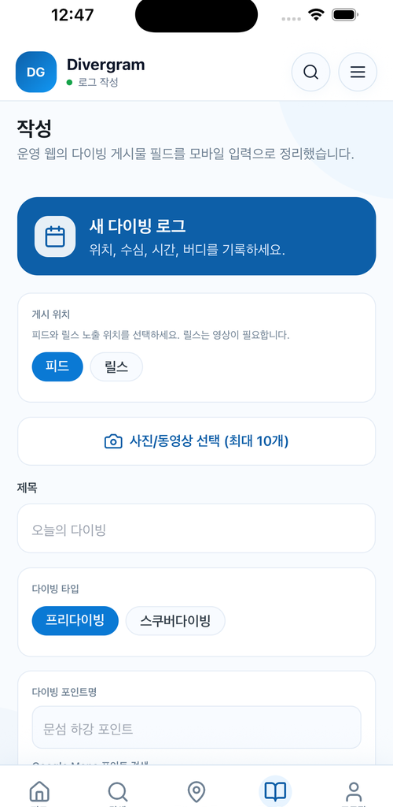
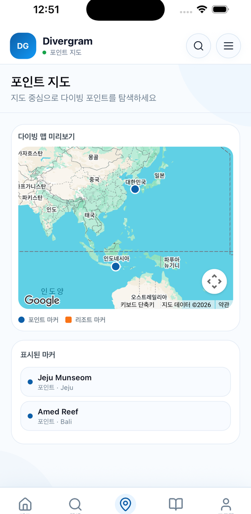

Divergram은 개발자 관점에서만 설계된 서비스가 아니라, 실제 다이버가 다이빙 전후에 어떤 정보를 찾고, 어떤 기록을 남기며, 어떤 순간에 불편을 느끼는지에 대한 현장 경험을 기반으로 출발했습니다.
Divergram
다이빙 기록과 안전을 연결하는 플랫폼
Business Proposal
모든 다이빙을
더 안전하게 기록하고
더 쉽게 연결합니다
Divergram
Divergram은 스쿠버다이빙, 프리다이빙, 스노클링 사용자를 위한 다이빙 특화 플랫폼입니다. 기록, 해양 날씨, 장비 연동, 안전 경고, 커뮤니티 공유를 하나의 사용자 경험으로 통합합니다.
제안 핵심
다이빙 전후의 분산된 정보를 하나로 모아 사용자의 기록 편의와 안전 판단을 높이고, 지역 다이빙 생태계와 파트너 연결을 확장하는 플랫폼을 구축합니다.
Logbook Feed
Reels & Stamp
Resort Booking
Shop & Education

Contents
제안서 전체 흐름
Divergram 제안서는 창업자 신뢰, 투자 논리, 시장 기회, 제품 전략, 수익 구조, 홍보·집행 계획 순서로 구성되어 있습니다. 심사자는 목차를 통해 사업의 실행 가능성과 투자 포인트를 빠르게 확인할 수 있습니다.
01. Trust & Thesis
- Founder Profile 창업자 역량
- Why Invest 투자 논리
- Executive Summary 사업 요약
02. Market & Product
- Market & Target 시장성과 고객
- Problem & Opportunity 문제와 기회
- Product / Service / MVP 제품 범위
03. Engagement & Proof
- Stamp & Retention 초기 30종 스탬프
- Pilot & KPI 실증 목표와 산출 근거
- App Screens / Mockups 화면 증빙
04. Business & Execution
- Business Model / Revenue 수익과 단가
- Promotion Budget 홍보 전략과 예산
- Execution / Funding / Risk 집행과 리스크
투자 검토의 핵심은 “기능이 많은 앱”이 아니라, 다이버의 반복 사용을 통해 리조트 예약, 광고, 쇼핑몰, 강습/교육 수익이 연결되는 구조를 확인하는 것입니다.
Founder Profile
기술과 다이빙 현장을 모두 이해하는 실행형 창업자
Divergram은 단순한 앱 아이디어가 아니라, IT 제품 개발 경험과 실제 다이빙 현장 경험이 결합된 사업입니다. 대표자는 20년 이상의 IT 개발, 기획, 설계 경험과 10년 이상의 다이빙 경력 및 강사 활동을 바탕으로 기술 구현과 사용자 현장성을 함께 검증할 수 있습니다.
Sample photo area
IT 개발·기획·설계 20년 이상
서비스 구조 설계, 프론트엔드/백엔드 개발, 데이터 흐름, 운영 시스템, 관리자 도구까지 제품 전반을 이해합니다.
다이빙 경력 10년 이상 및 강사 활동
스쿠버다이빙 현장의 안전 판단, 교육, 버디 문화, 리조트/샵 운영 흐름, 로그 기록 습관을 실제 경험으로 이해합니다.
사업 실행 적합성
기술 구현 가능성과 현장 필요성을 동시에 판단할 수 있어 MVP 개발, 파일럿 운영, 파트너 협업의 시행착오를 줄일 수 있습니다.
20+
IT 개발·기획·설계 경력
10+
다이빙 현장 경험
강사
교육과 안전 운영 이해
실행
제품화와 제휴 설득 가능
제품 판단력
사용자에게 필요한 기능과 기술적으로 가능한 범위를 균형 있게 결정할 수 있습니다.
현장 검증력
다이빙 강사와 다이버 네트워크를 통해 초기 사용자 피드백과 실증 운영을 빠르게 수행할 수 있습니다.
파트너 설득력
리조트, 다이빙샵, 교육기관, 장비 브랜드가 이해할 수 있는 언어로 서비스를 설명할 수 있습니다.
Why Invest
Divergram은 다이버의 첫 화면을 선점하는 해양 레저 거래 플랫폼입니다
투자해야 하는 이유는 다이빙 기록 앱 하나를 만드는 것이 아니라, 아직 하나로 연결되지 않은 다이빙 산업의 기록, 탐색, 예약, 커머스, 교육, 광고 접점을 하나의 사용자 데이터와 파트너 네트워크로 묶는 일이기 때문입니다.
다이버가 포인트를 찾고, 리조트를 예약하고, 장비를 구매하고, 강습을 신청하고, 자신의 경험을 공유하는 모든 순간은 아직 하나의 플랫폼으로 연결되어 있지 않습니다.
Divergram은 로그북과 스탬프를 반복 사용의 시작점으로 삼고, 그 위에 리조트 예약, 검색 광고, 쇼핑몰, 강습/교육을 연결합니다. 사용자의 기록이 쌓일수록 파트너가 비용을 지불할 이유도 함께 커지는 구조입니다.
1
Digital Entry Point
다이버가 다이빙 전후에 처음 여는 앱이 되는 것을 목표로 합니다.
2
Repeat Usage
로그북, 릴스, 스탬프가 단발성 방문이 아닌 반복 사용을 만듭니다.
3
Transaction Layer
리조트 예약, 쇼핑몰, 강습/교육 신청으로 거래 수익을 만듭니다.
4
Partner Revenue
리조트, 샵, 브랜드, 강사가 광고와 노출 성과에 비용을 지불합니다.
5
Scalable Model
한 지역에서 검증한 포인트/리조트 모델을 다른 해양 레저 지역으로 복제합니다.
Founder Commitment
이 사업은 단순히 만들어보고 싶은 앱이 아닙니다. 20년 이상 IT 제품을 만들고, 10년 이상 다이빙 현장에서 다이버와 강사로 활동하며 직접 느낀 문제를 해결하려는 사업입니다. Divergram은 대표자가 가장 잘 이해하는 기술과 가장 오래 몸으로 경험한 현장이 만나는 프로젝트이며, 그래서 끝까지 실행할 수 있는 이유가 분명합니다.
Executive Summary
다이빙 전후의 모든 경험을 하나의 로그로 연결합니다
Divergram은 단순 SNS가 아니라 다이버의 활동 흐름을 데이터화하는 서비스입니다. 다이빙 포인트, 해양 상태, 장비 로그, 사진과 영상, 버디, 자격증, 공개 범위를 하나의 로그로 연결해 사용자의 반복 사용과 파트너 확장을 동시에 만듭니다.
Discover
다이빙포인트
지도에서 포인트를 찾고, 입수 위치와 주변 정보를 로그에 연결합니다.
Prepare
해양 날씨
파고, 조류, 수온, 시야를 확인해 입수 전 위험도를 판단합니다.
Connect
버디
함께한 다이버를 기록하고, 피드와 공유를 통해 커뮤니티 관계를 이어갑니다.
Stay
리조트 · 샵
지역 다이빙샵, 리조트, 교육, 체험 상품으로 연결되는 파트너 접점을 만듭니다.
Record
DiveLog
수심, 시간, 장비, 사진, 영상, 메모를 하나의 다이빙 기록으로 정리합니다.
Sync & Share
장비 연동 · AI 공유
Garmin, Suunto, Shearwater, Bluetooth 로그와 AI 캡션으로 기록 완성도를 높입니다.
핵심 가설은 명확합니다. 다이버는 기록을 더 쉽게 남기고 싶고, 입수 전 안전 정보를 한 번에 보고 싶으며,
장비 데이터를 자동으로 모으고, 자신의 경험을 보기 좋게 공유하고 싶어 합니다.
사용자 가치
로그 입력 부담을 줄이고, 위치와 날씨, 장비, 사진을 한 번에 관리합니다.
운영 가치
관리자 웹과 API를 통해 신고, 자격증, 통계, 파트너 정보를 체계적으로 운영합니다.
사업 가치
광고, 예약 수수료, 검색 노출, 쇼핑몰, 강습 프로그램으로 지속 가능한 모델을 만듭니다.
| 서비스 정의 | 다이빙 기록, 해양 안전 정보, 장비 로그, 콘텐츠 공유를 통합하는 다이버 플랫폼 |
|---|---|
| 핵심 고객 | 스쿠버다이버, 프리다이버, 스노클링 사용자, 다이빙샵, 교육기관, 리조트, 장비 브랜드 |
| 사업 방향 | 초기에는 DiveLog와 해양 날씨를 중심으로 반복 사용을 만들고, 이후 장비 연동과 파트너 생태계로 확장 |
Market & Target
다이빙 관광, 장비, 교육, 지역 예약이 하나의 디지털 접점으로 이동하고 있습니다
Divergram의 시장은 단순 앱 시장이 아니라 다이빙 관광, 장비 구매, 교육 프로그램, 지역 리조트 예약이 만나는 영역입니다. 사용자가 다이빙 전후에 반복적으로 사용하는 기록/탐색 접점을 확보하면 광고, 예약, 커머스, 교육 수익으로 확장할 수 있습니다.
$4.55B
글로벌 다이빙 관광 시장은 2023년 약 45.5억 달러 규모로 추정됩니다.
$8.83B
2030년 약 88.3억 달러까지 성장 전망이 제시되어 있습니다.
9.9%
2024~2030년 연평균 성장률 전망. 체험형 여행과 해양 레저 수요가 성장 배경입니다.
글로벌 다이빙 관광 시장 성장 전망
Divergram의 진입 포인트
- 관광 시장 성장의 접점은 예약 이전의 탐색, 기록, 커뮤니티에서 시작됩니다.
- 다이버가 반복적으로 남기는 로그와 스탬프가 리조트, 장비, 강습 수익으로 연결됩니다.
- 초기에는 국내 파일럿으로 검증하고, 검증된 포인트/리조트 모델을 해외 인기 지역으로 복제합니다.
초기 타깃 고객
- 다이빙 로그와 사진/영상을 꾸준히 남기고 싶은 스쿠버·프리다이버
- 다이빙포인트, 해양 날씨, 리조트 정보를 한 번에 확인하려는 여행형 다이버
- 강습, 투어, 장비 구매, 리조트 예약을 앱 안에서 연결하고 싶은 신규 다이버
- 디지털 홍보와 예약 전환이 필요한 리조트, 다이빙샵, 강사, 장비 브랜드
시장 진입 논리
- 기록과 탐색은 사용자가 반복적으로 앱에 들어오는 기본 접점입니다.
- 리조트와 샵은 검색 노출, 예약 문의, 방문 스탬프를 통해 직접적인 효과를 확인할 수 있습니다.
- 커머스와 강습은 다이버의 성장 단계에 맞춰 자연스럽게 연결되는 추가 수익원입니다.
- 초기에는 국내 파일럿으로 검증하고, 이후 인기 해외 포인트와 제휴 리조트로 확장합니다.
출처: Grand View Research Horizon, Global Diving Tourism Market Outlook 2023-2030. 시장 수치는 외부 리포트 기반 참고값이며 실제 사업계획에서는 지역별 검증 수치로 보완합니다.
Problem & Opportunity
현재 다이빙 경험은 기록, 안전, 장비, 공유가 분리되어 있습니다
다이빙은 준비, 입수, 기록, 공유, 재방문이 이어지는 활동입니다. 하지만 현재 사용자는 여러 앱과 웹사이트를 오가며 데이터를 직접 옮기고, 해양 상태를 따로 확인하고, 콘텐츠를 다시 만들어야 합니다.
현재 경험
- 로그는 장비 앱, 사진첩, 메모, SNS에 분산됩니다.
- 해양 상태와 위험도는 외부 사이트에서 따로 확인합니다.
- 버디, 리조트, 포인트 정보가 기록과 분리됩니다.
- 여행 후 공유 콘텐츠를 다시 제작해야 합니다.
→
Divergram 경험
- 다이빙포인트, 날씨, 버디, 장비 로그를 하나로 저장합니다.
- 입수 전 조건과 기록 후 공유가 같은 흐름에 들어옵니다.
- 리조트, 샵, 교육기관이 포인트와 로그에 연결됩니다.
- AI 요약과 캡션으로 공유 콘텐츠를 바로 만듭니다.
다이버
로그 작성, 버디 연결, 공유
Divergram
기록 · 안전 · 포인트 · 파트너
다이빙포인트
위치, 리뷰, 사진, 해양 상태
리조트 · 샵
탐색, 예약, 교육, 체험 상품
장비 · 자격증
로그 동기화, 인증, 활동 이력
운영자
신고, 통계, 파트너 관리
Divergram의 기회는 “SNS를 하나 더 만드는 것”이 아니라, 다이빙 전후의 반복 행동을 하나의 표준 흐름으로 만드는 데 있습니다.
Competitive Position
Divergram은 분산된 다이빙 앱 기능을 하나의 여정으로 결합합니다
기존 서비스는 로그 작성, SNS 공유, 리조트 검색, 장비 연동, 교육 예약 중 하나의 기능에 집중하는 경우가 많습니다. Divergram은 다이버가 실제로 이동하는 “탐색 → 기록 → 공유 → 예약/구매/교육 → 재방문” 흐름 전체를 연결합니다.
| 구분 | 일반 로그 앱 | SNS/릴스 앱 | 예약/여행 플랫폼 | 장비 연동 앱 | Divergram |
|---|---|---|---|---|---|
| 로그북/Feed | 강점 | 약함 | 없음 | 장비 중심 | 기록+관계+콘텐츠 통합 |
| 릴스/공유 | 약함 | 강점 | 약함 | 없음 | 다이빙 기록 기반 공유 |
| 포인트/해양 정보 | 일부 | 없음 | 지역 정보 중심 | 없음 | 입수 전 판단 정보 제공 |
| 리조트/샵 연결 | 약함 | 광고성 노출 | 강점 | 없음 | 검색, 예약, 방문 스탬프 연결 |
| 수익화 구조 | 앱 과금 중심 | 광고 중심 | 예약 수수료 | 장비 생태계 | 광고+예약+검색광고+커머스+교육 |
차별화 포인트는 개별 기능의 존재가 아니라, 다이버의 활동 데이터가 리조트, 포인트, 장비, 쇼핑몰, 강습/교육으로 연결되는 구조입니다.
Product Strategy
Divergram은 다이빙의 전 과정을 하나의 제품 흐름으로 연결합니다
사용자는 다이빙 전 포인트와 해양 상태를 확인하고, 다이빙 후 장비 로그와 사진을 가져오며, AI 도움을 받아 기록을 정리하고 공유합니다. 이 흐름이 반복될수록 개인 로그와 지역 데이터가 함께 축적됩니다.
1
탐색 · 예약
다이빙포인트, 리조트, 샵, 해양 날씨, 프로그램을 확인합니다.
2
기록 · 피드
로그북(Feed)에 다이빙 기록, 버디, 사진, 영상을 정리합니다.
3
릴스 · 공유
짧은 영상, AI 캡션, 공유 이미지로 경험을 콘텐츠화합니다.
4
보상 · 재방문
스탬프와 뱃지로 다이빙 횟수, 방문, 팔로우 활동을 축적합니다.
1. 탐색 · 예약
포인트 검색, 해양 날씨, 리조트/샵 상세, 강습 프로그램, 예약 문의 버튼으로 전환을 만듭니다.
2. 기록 · 피드
수심, 시간, 버디, 사진/영상, 장비, 공개 범위를 하나의 로그 카드로 구조화합니다.
3. 릴스 · 공유
짧은 영상과 AI 캡션으로 개인 기록을 커뮤니티 콘텐츠와 외부 유입 채널로 전환합니다.
4. 보상 · 재방문
다이빙 횟수, 리조트 방문, 팔로우, 교육 수료 스탬프로 반복 방문 이유를 만듭니다.
| 수익 항목 | 단가 가정 | Divergram 적용 방식 |
|---|---|---|
| 지역 AD 광고 | 월 50만~300만원 | 피드, 탐색, 포인트 상세, 리조트 화면의 지역/브랜드 광고 상품 |
| 검색 순위 광고 | 파트너당 월 10만~50만원 | 다이빙포인트, 리조트, 샵, 강습 검색 결과 상위 노출 |
| 강습/교육 | 체험 8만~15만원, 오픈워터 45만~80만원, 스페셜티 20만~40만원 | 신청 중개, 자체/제휴 프로그램 운영, 박람회 상담 전환 |
| 쇼핑몰 | 장비 판매 마진 10~25% 가정 | 로그북/교육 단계별 장비 추천, 쿠폰, 스탬프 캠페인 연결 |
사용자 앱
로그북(Feed), 릴스, 탐색, 리조트, 쇼핑몰, 강습/교육을 중심으로 다이버의 반복 사용 흐름을 제공합니다.
운영 시스템
관리자 웹과 API 서버를 통해 회원, 신고, 포인트, 리조트/샵, 자격증, 광고, 통계, 미디어, 푸시, 연동 상태를 관리합니다.
Service Scope
주요 기능은 기록, 콘텐츠, 탐색, 예약, 구매, 교육으로 구성됩니다
Divergram은 다이버가 앱을 여는 명확한 이유를 여섯 개의 핵심 메뉴로 만듭니다. 다이빙 기록을 남기고, 짧은 콘텐츠로 공유하고, 포인트와 리조트를 찾고, 필요한 상품과 교육까지 연결하는 구조입니다.
로그북(Feed)
날짜, 입수/출수 시간, 수심, 수온, 시야, 조류, 장비, 버디, 사진과 영상을 하나의 피드형 기록으로 관리합니다.
릴스
짧은 다이빙 영상, 포인트 하이라이트, 장비 리뷰, 교육 팁을 공유해 커뮤니티 유입과 체류 시간을 만듭니다.
탐색
다이빙포인트, 해양 날씨, 리조트, 샵, 리뷰, 입수 위치, 주변 정보를 지도와 검색으로 제공합니다.
리조트
제휴 리조트와 다이빙샵의 소개, 위치, 예약 문의, 체험 상품, 방문 이력을 앱 안에서 연결합니다.
쇼핑몰
마스크, 핀, 슈트, 컴퓨터, 액세서리 등 장비 구매와 제휴 상품 추천을 통해 추가 수익 접점을 만듭니다.
강습/교육
초급, 중급, 스페셜티, 안전 교육, 투어 프로그램을 소개하고 신청으로 연결해 교육 수요를 흡수합니다.
제안의 핵심은 메뉴를 많이 넣는 것이 아니라, 다이버가 기록하고 보고 사고 배우는 행동을 하나의 앱 안에서 반복하게 만드는 것입니다.
MVP Scope
초기 출시는 핵심 사용 흐름을 검증하는 범위로 제한합니다
Divergram은 모든 기능을 한 번에 완성하는 방식이 아니라, 사용자가 반복적으로 돌아오는 핵심 흐름부터 검증합니다. 1차 MVP는 로그북, 탐색, 리조트 정보, 스탬프의 기본 루프를 만들고, 이후 커머스와 교육, 장비 연동을 단계적으로 확장합니다.
반복 사용 루프
로그북 작성, 탐색, 스탬프 달성, 릴스 공유를 통해 매주 다시 들어오는 이유를 만듭니다.
파트너 전환 루프
리조트/샵 노출, 예약 문의, 방문 스탬프, 광고 상품 전환 가능성을 검증합니다.
수익화 확장 루프
검색 광고, 예약 수수료, 쇼핑몰, 강습/교육, 브랜드 캠페인으로 확장합니다.
1차 MVP: 반복 사용 검증
- 로그북(Feed) 작성, 사진/영상 첨부, 공개 범위 설정
- 다이빙포인트 탐색, 기본 해양 날씨, 리조트/샵 정보
- 첫 다이빙, 10회 다이빙, 첫 팔로우 등 기본 스탬프
- 관리자 회원/콘텐츠/신고/파트너 기본 관리
2차 확장: 수익화 검증
- 리조트 예약 문의와 예약당 USD 1 수수료 정산
- 검색 순위 광고와 지역 AD 광고 상품 운영
- 쇼핑몰 제휴 상품, 강습/교육 프로그램 신청
- 릴스 공유, 캠페인 스탬프, 제휴 리조트 방문 스탬프
3차 고도화: 데이터 플랫폼
- Garmin, Suunto, Shearwater, Bluetooth 장비 로그 연동
- AI 로그 요약, 캡션, 공유 이미지 자동 생성
- 파트너 대시보드, 지역별 성과 리포트, API 확장
- 해외 포인트와 글로벌 리조트 네트워크 확장
검증 기준
사용자가 로그북을 작성하고, 포인트를 찾고, 스탬프를 달성하며 다시 돌아오는가를 확인합니다.
수익 기준
파트너가 광고, 검색 노출, 예약 전환, 방문 캠페인에 비용을 지불할 이유를 검증합니다.
확장 기준
반복 사용률과 파트너 성과가 확인된 뒤 장비 연동과 글로벌 확장을 진행합니다.
초기 30종 스탬프로 사용자가 경험을 모아가는 재미를 만듭니다
Divergram은 iPhone의 뱃지처럼 사용자의 활동을 눈에 보이는 성취로 전환합니다. 초기에는 다이빙 기록, 제휴 리조트 방문, 팔로우, 교육 수료, 릴스 공유, 쇼핑몰/박람회 참여까지 30종 스탬프를 제공해 재방문 동기를 강화합니다.
D1첫 다이빙Dive
D1010회 다이빙Dive
D5050회 다이빙Dive
D100100회 다이빙Dive
D200200회 다이빙Dive
NT야간 다이빙Special
R1첫 리조트 방문Visit
R5리조트 5회Visit
R10리조트 10회Visit
QR샵 체크인Partner
TR투어 참가Partner
RV리뷰 작성Partner
F1첫 팔로우Social
FR첫 팔로워Social
BD버디 연결Social
RL릴스 첫 공유Social
LK100 좋아요Social
CP캡션 공유Social
OW오픈워터Learn
AD어드밴스드Learn
SF안전 교육Learn
SP스페셜티Learn
EQ장비 체험Learn
IC강사 추천Learn
EX박람회 방문Event
AD광고 캠페인Event
SH첫 장비 구매Shop
CP쿠폰 사용Shop
PT포인트 개척Explore
GL해외 포인트Explore
사용자 효과
- 다이빙 기록이 단순 저장을 넘어 성취 수집 경험으로 바뀝니다.
- 스탬프를 모으기 위해 로그북 작성, 리조트 방문, 릴스 공유가 반복됩니다.
- 초보 다이버도 첫 기록과 첫 팔로워를 통해 앱 안에서 성장감을 느낍니다.
사업 효과
- 제휴 리조트 방문 스탬프는 파트너 예약과 재방문 프로모션으로 연결됩니다.
- 쇼핑몰, 강습/교육, 박람회 이벤트와 연동해 캠페인형 스탬프를 운영할 수 있습니다.
- 스탬프 달성률은 리텐션, 방문 전환, 제휴 성과를 설명하는 지표가 됩니다.
Pilot & Operation
실증은 지역 포인트와 실제 사용자 흐름을 중심으로 진행합니다
초기 실증은 기능 완성도보다 “사용자가 반복해서 쓰는 이유”를 검증하는 데 집중합니다. 특정 지역 또는 다이빙샵 네트워크를 기준으로 포인트 정보, 해양 날씨 조회, 로그 작성, 릴스 공유, 스탬프 달성, 파트너 유입을 측정합니다.
파일럿 운영 방식
- 1개 시범 지역 또는 다이빙샵 그룹을 선정해 초기 포인트 데이터를 정리합니다.
- 파일럿 사용자에게 로그북 작성, 날씨 조회, 릴스 공유, 스탬프 달성 흐름을 반복 사용하게 합니다.
- 운영자는 관리자 웹에서 신고, 자격증, 콘텐츠, 연동 상태, 기본 통계를 확인합니다.
- 실증 종료 후 사용자 행동, 연동 성공률, 재방문율, 제휴 전환 가능성을 리포트화합니다.
검증할 핵심 질문
- 다이버가 수동 로그 대신 앱 기록을 지속적으로 선택하는가?
- 해양 날씨와 위험도 정보가 입수 전 의사결정에 실제로 사용되는가?
- 장비 로그 연동이 기록 누락과 입력 피로를 줄이는가?
- 릴스와 스탬프가 신규 사용자 유입, 재방문, 파트너 노출에 기여하는가?
측정 지표
주간 활성 사용자, 로그 작성 수, 릴스 공유 수, 스탬프 달성률, 리조트 방문 전환을 우선 측정합니다.
운영 산출물
파일럿 운영 보고서, 사용자 피드백, 지역 포인트 데이터, 기능 개선 목록, 파트너 제휴 제안서를 산출합니다.
확장 기준
반복 사용률과 연동 안정성이 확인되면 지역 확대, 교육기관 제휴, 장비 브랜드 협력으로 확장합니다.
Year 1 KPI
1년차 목표는 사용자 반복 사용과 파트너 전환 가능성을 증명하는 것입니다
초기 성과는 매출 규모보다 “다이버가 실제로 반복 사용하고, 파트너가 비용을 지불할 수 있는가”를 검증하는 데 집중합니다. 아래 목표는 제출용 기본 가정이며, 파일럿 지역과 사업비 규모에 따라 조정할 수 있습니다.
3,000명
1년차 누적 가입자 목표. 강사 네트워크, 박람회, 리조트 제휴를 통해 확보합니다.
1,000 MAU
월간 활성 사용자 목표. 로그북, 릴스, 스탬프를 반복 사용 지표로 봅니다.
10,000건
누적 로그북 작성 목표. 포인트, 버디, 사진/영상 데이터를 함께 축적합니다.
20곳
제휴 리조트/샵 목표. 검색 노출, 방문 스탬프, 예약 문의를 함께 검증합니다.
5,000회
다이빙포인트와 해양 날씨 조회 목표. 탐색 기능의 실사용성을 확인합니다.
300건
예약 문의, 강습 신청, 쇼핑몰 전환 등 파트너 전환 행동 목표입니다.
가입자 3,000명
강사/샵 네트워크 20곳 × 월 30명 유입 × 5개월 + 박람회/AD 유입 1,000명 기준.
1,000 MAU
누적 가입자 3,000명 중 월 30~35%가 로그북, 탐색, 스탬프를 재사용한다는 보수적 가정.
로그 10,000건
활성 사용자 1,000명 × 월 평균 1건 로그 × 10개월 운영 기준.
제휴 20곳
파일럿 지역 5곳 + 국내 주요 다이빙 지역 3권역 × 5곳 파트너 확보 기준.
조회 5,000회
MAU 1,000명 × 월 평균 5회 포인트/날씨 조회 기준.
전환 300건
예약/강습/쇼핑 문의 5,000회 노출 중 6% 전환 행동 기준.
파트너 확보 계획
- 파일럿 지역 다이빙샵 5곳과 초기 운영 협의
- 제휴 리조트 10~20곳의 기본 프로필과 방문 스탬프 구성
- 강사 네트워크를 통한 교육/체험 프로그램 등록
- 장비 브랜드 또는 쇼핑몰 제휴 상품 30개 이상 테스트
보고 산출물
- 월간 사용자 행동 리포트와 리텐션 지표
- 제휴 파트너별 노출, 클릭, 방문, 예약 문의 성과
- 스탬프 캠페인 참여율과 재방문 영향 분석
- 2년차 수익화 전환을 위한 광고/예약 상품 제안서
실제 앱 화면으로 확인하는 Divergram의 사용자 경험
Divergram은 다이빙을 처음 시작하는 사용자도 쉽게 진입할 수 있도록 온보딩, 로그인, 핵심 가치 안내 화면을 제공합니다. 제안 단계에서는 앱의 완성도와 브랜드 일관성을 보여주는 실제 스토어용 스크린샷을 함께 제시합니다.



스크린샷은 단순 장식이 아니라, 심사자와 파트너가 “실제로 구현 중인 서비스”를 직관적으로 이해하게 만드는 증빙 자료입니다.
이후 DiveLog, 해양 날씨, 장비 연동 화면이 완성될수록 이 페이지는 제품 실증 자료로 확장됩니다.
Core Screen Mockups
핵심 기능 화면은 로그북, 탐색, 리조트, 커머스, 교육, 스탬프로 확장됩니다
현재 스크린샷은 브랜드와 온보딩 중심의 구현 화면입니다. 다음 단계에서는 실제 반복 사용과 수익화에 직접 연결되는 핵심 화면을 아래와 같은 구조로 확장합니다.
로그북(Feed)
다이빙 시간, 수심, 버디, 사진/영상, 포인트, 공개 범위를 카드형 피드로 보여줍니다.
Dive #24 Buddy 2 Stamp
탐색
지도 기반 포인트, 해양 날씨, 리뷰, 주변 리조트와 샵 정보를 한 화면에서 탐색합니다.
Point Weather Review
리조트
제휴 리조트 소개, 예약 문의, 방문 스탬프, 프로그램 안내를 파트너 화면으로 구성합니다.
Booking $1 Fee Visit
쇼핑몰
마스크, 핀, 슈트, 컴퓨터, 액세서리 등 다이버 성장 단계에 맞춘 상품을 추천합니다.
Gear Margin Coupon
강습/교육
초급, 중급, 스페셜티, 안전 교육, 투어 프로그램을 검색하고 신청 흐름으로 연결합니다.
Course Instructor Apply
스탬프
첫 다이빙, 10회 다이빙, 제휴 리조트 방문, 첫 팔로워 등 성취를 수집합니다.
Dive Visit Social
이 페이지는 실제 개발 화면의 기획 방향을 보여주는 목업입니다. 앱 개발이 진행되면 이 영역은 실제 캡처 이미지로 교체해 제출 신뢰도를 높일 수 있습니다.
차별화는 기능 개수가 아니라, 다이빙 데이터가 연결되는 방식입니다
일반 커뮤니티 서비스는 콘텐츠 소비에 집중합니다. Divergram은 콘텐츠 이전에 다이빙 기록과 안전 정보를 구조화합니다. 사용자의 로그가 쌓일수록 개인 이력, 포인트 정보, 지역 연결, 파트너 비즈니스가 함께 커집니다.
차별화 포인트
- 다이빙 포인트, 해양 날씨, 장비 로그, 사진, 버디 정보를 하나의 기록으로 통합합니다.
- 위험도와 추천 시간대를 사용자에게 이해 가능한 문장으로 제공합니다.
- 외부 API와 BLE 연동을 통해 수동 입력 부담을 줄입니다.
- 기록을 공유 가능한 이미지와 캡션으로 전환해 자연스러운 유입을 만듭니다.
기대 효과
- 사용자: 기록 편의성, 안전 판단, 콘텐츠 공유 경험 개선
- 지역: 다이빙 포인트, 샵, 리조트, 교육기관 노출 확대
- 산업: 장비 브랜드와 교육기관의 디지털 접점 확보
- 운영: 신고, 정책 동의, 자격증, 통계 기반 신뢰도 강화
| 안전성 | 해양 날씨, 조류, 수온, 시야, 파고 정보를 기반으로 보수적인 위험도와 주의 문구를 제공합니다. |
|---|---|
| 지속 사용성 | 기록 자동화와 공유 콘텐츠 생성을 통해 사용자가 다이빙 후 다시 앱으로 돌아오는 이유를 만듭니다. |
| 확장성 | 앱, 관리자, 공개 웹, API가 분리되어 지역, 파트너, 장비, 교육 영역으로 단계 확장이 가능합니다. |
| 신뢰성 | 정책 동의, 신고, 계정 삭제, 알림 설정, 연동 실패 처리 등 운영에 필요한 기본 흐름을 설계합니다. |
Business Model
수익은 광고, 예약 연결, 검색 노출, 쇼핑몰, 강습 프로그램에서 발생합니다
Divergram은 사용자에게 결제를 요구하는 방식보다, 다이버의 반복 사용과 지역 파트너 연결을 기반으로 수익을 만듭니다. 앱 사용자는 무료로 진입하고, 리조트·샵·교육·장비·여행 파트너가 실제 노출과 예약 성과에 따라 비용을 지불하는 구조입니다.
AD 광고
피드, 포인트 상세, 날씨 화면, 리조트/샵 탐색 화면에 다이빙 관련 브랜드와 지역 광고를 노출합니다.
예약 연결 수수료
리조트 예약 또는 체험 프로그램 예약 발생 시 건당 USD 1를 기본 수수료로 설정합니다.
검색 순위 광고
다이빙포인트, 리조트, 샵, 강습 검색 결과에서 상위 노출 상품을 월 단위 광고 상품으로 운영합니다.
핵심 성장 전략
- 초기: DiveLog와 해양 날씨 중심의 MVP 안정화
- 중기: 리조트 예약, 검색 순위 광고, 지역 AD 광고 상품 출시
- 확장: 쇼핑몰 운영과 장비/투어/보험/교육 제휴 확대
- 고도화: 강습 프로그램, 스포츠 박람회 홍보, 파트너 대시보드 제공
성과 지표
- 주간 활성 사용자와 재방문율
- 광고 노출 수, 클릭률, 리조트 예약 전환 수
- 검색 순위 광고 계약 수와 월 반복 매출
- 쇼핑몰 거래액, 강습 프로그램 신청 수, 스탬프 캠페인 참여율, 제휴 파트너 수
사업화의 핵심은 사용자를 과금하는 것이 아니라, 다이버가 자주 찾는 접점에 리조트, 샵, 장비, 강습, 여행 상품을 자연스럽게 연결하는 것입니다.
Revenue & Cost Structure
수익구조는 광고, 예약, 검색 노출, 커머스, 강습 프로그램으로 구성됩니다
아래 수치는 실제 계약 전 제출용 기본 가정안입니다. 광고 단가, 예약량, 쇼핑몰 거래액, 강습 프로그램 판매량에 따라 매출은 조정되며, 초기에는 고정비를 낮추고 파트너 확보와 트래픽 확대에 집중합니다.
수익구조
| AD 광고 | 피드/포인트/날씨/리조트 화면 광고. 초기 월 300만~800만원, 3년차 월 2,000만원 이상 목표. |
|---|---|
| 예약 수수료 | 리조트/체험 예약 1건당 USD 1. 월 5,000건 기준 약 650만원 수준 매출 가정. |
| 검색 순위 광고 | 리조트, 샵, 강습, 포인트 상위 노출 상품. 파트너당 월 10만~50만원 광고 상품 운영. |
| 쇼핑몰/강습 | 장비 쇼핑몰 판매 마진, 제휴 상품 수수료, 자체/제휴 강습 프로그램 판매 수익, 스탬프 캠페인 제휴. |
예상 지출비용
| 개발 인건비 | 월 1,800만~2,800만원. 앱/API/관리자/연동/QA 개발 인력 기준. |
|---|---|
| 클라우드/운영 | 월 300만~700만원. 서버, DB, 미디어 저장, 지도/날씨 API, 모니터링 포함. |
| 실증/마케팅 | 월 500만~1,500만원. 파일럿, 콘텐츠 제작, 광고 집행, 파트너 영업 포함. |
| 법무/정책 | 월 100만~300만원. 개인정보, 위치정보, 약관, 안전 고지, 회계/계약 검토 포함. |
| 합계 | 초기 월 2,700만~5,300만원, 연 3.2억~6.4억원 수준의 운영비 가정. |
Traffic
로그북, 릴스, 탐색, 스탬프가 반복 방문과 광고 노출을 만듭니다.
Transaction
리조트 예약, 쇼핑몰, 강습/교육 신청이 거래 수익으로 연결됩니다.
Partner
검색 순위 광고와 캠페인 스탬프로 제휴 파트너의 참여 이유를 만듭니다.
Revenue Assumptions
수익 숫자는 트래픽, 예약 전환, 파트너 광고 단가를 기준으로 검증합니다
Divergram의 매출 추정은 사용자를 직접 과금하는 방식이 아니라, 다이버의 반복 사용이 만든 노출과 전환을 파트너 수익으로 연결하는 구조입니다. 아래 산식은 제출용 기본 가정이며, 파일럿 운영 결과에 따라 보수적으로 조정합니다.
| 수익원 | 기본 산식 | 1년차 검증 기준 | 확장 조건 |
|---|---|---|---|
| AD 광고 | 월간 노출 수 × CPM/CPC 광고 단가 | 로그북, 릴스, 탐색 화면의 광고 노출과 클릭률 측정 | MAU와 페이지뷰 증가, 브랜드 광고주 확보 |
| 예약 수수료 | 리조트/체험 예약 건수 × USD 1 | 월 예약 문의 300건 이상, 실제 예약 전환율 측정 | 제휴 리조트 50곳 이상, 인기 포인트별 예약 흐름 확보 |
| 검색 순위 광고 | 파트너 수 × 월 10만~50만원 광고 상품 | 제휴 리조트/샵 20곳 중 광고 상품 전환 의향 확인 | 파트너 성과 리포트 제공과 지역별 슬롯 상품화 |
| 쇼핑몰 | 거래액 × 판매 마진 또는 제휴 수수료 | 장비 카테고리별 클릭, 장바구니, 구매 전환 추적 | 로그북/강습 단계별 장비 추천과 쿠폰 캠페인 |
| 강습/교육 | 교육 신청 건수 × 중개/운영 마진 | 초급/안전/스페셜티 과정 신청 수와 상담 전환 측정 | 강사 네트워크, 교육기관 제휴, 박람회 현장 상담 확대 |
보수적 추정
초기에는 광고 단가보다 사용자 행동과 파트너 전환 의향을 우선 검증합니다.
측정 가능성
노출, 클릭, 예약 문의, 방문 스탬프, 구매/교육 신청을 관리자 리포트로 집계합니다.
확장 가능성
파일럿 지역에서 검증한 산식을 다른 다이빙 포인트와 리조트로 복제합니다.
손익분기점은 광고 매출과 예약 수수료가 고정비를 넘는 시점입니다
아래는 실제 매출 확정치가 아니라 사업계획 수립을 위한 기본 시나리오입니다. 초기 1년은 제품 안정화와 실증에 집중하고, 2년차부터 AD 광고, 리조트 예약 수수료, 검색 순위 광고, 쇼핑몰, 강습 프로그램으로 고정비를 흡수하는 구조를 목표로 합니다.
월 고정비 가정
초기 월 2,700만~5,300만원, 안정화 후 월 4,000만~7,000만원 범위로 관리
BEP 목표
월 광고 2,000만원 + 예약 1만건 + 검색광고 50곳 + 쇼핑/강습 매출 확보
예상 시점
보수적 기준 3년차 후반, 빠른 파트너 확보 시 2년차 후반 손익분기 가능
1단계: 사용성
무료 진입, 로그북 작성, 릴스 공유, 스탬프 달성으로 체류 지표를 확보합니다.
2단계: 전환
리조트 예약, 쇼핑몰 구매, 강습 신청으로 파트너 거래를 검증합니다.
3단계: 손익
광고와 예약 수수료, 검색 광고, 커머스 마진이 고정비를 초과하는 구조를 만듭니다.
| 구분 | 1년차 | 2년차 | 3년차 | 5년차 |
|---|---|---|---|---|
| 핵심 목표 | MVP/파일럿 | 광고/예약 수익화 | BEP 접근 | 확장 수익화 |
| 주요 수익 | 지원금, 파일럿, 초기 제휴 | AD 광고, 예약 수수료, 검색광고 | 쇼핑몰, 강습, 브랜드 광고 | 글로벌 리조트, 커머스, 박람회 제휴 |
| 비용 관리 | 개발 중심 | 운영/마케팅 확대 | 서버/CS/제휴 운영 최적화 | 지역별 조직/파트너 비용 |
| 손익 관점 | 투자/지원 필요 | 매출 검증 | 손익분기 목표 | 영업이익 구조화 |
실제 BEP는 광고 단가, 예약 전환율, 쇼핑몰 마진, 강습 프로그램 판매량, 클라우드/API 비용에 따라 조정됩니다.
Long-term Roadmap
1년차 검증에서 10년차 해양 레저 플랫폼 확장까지 단계적으로 성장합니다
Divergram의 발전 방향은 기능 출시 순서가 아니라 시장 신뢰를 쌓는 순서로 설계합니다. 초기에는 기록과 안전 정보의 반복 사용을 만들고, 이후 버디, 포인트, 리조트, 장비, 교육, 여행 영역을 연결합니다.
1년차
MVP와 파일럿
DiveLog, 해양 날씨, 앱 온보딩, 초기 포인트 데이터, 파일럿 사용자 검증을 완료합니다.
2년차
광고와 예약 수익화
AD 광고, 리조트 예약당 USD 1 수수료, 검색 순위 광고, 버디 기능, 장비 연동을 검증합니다.
3년차
손익분기 접근
파트너 50곳, 월 예약 1만건, 광고 매출, 쇼핑몰과 강습 프로그램을 통해 손익분기점을 목표로 합니다.
5년차
지역 확장
국내 주요 다이빙 지역과 해외 인기 포인트로 확장하고, 예약/교육/장비 생태계를 강화합니다.
10년차
글로벌 플랫폼
글로벌 다이버 로그, 포인트 데이터, 장비 연동, 리조트 네트워크를 연결하는 해양 레저 플랫폼으로 확장합니다.
장기적으로 Divergram은 “다이빙 기록 앱”에서 출발해 다이버, 버디, 리조트, 다이빙포인트, 장비, 교육기관을 연결하는
해양 레저 운영 인프라로 성장하는 것을 목표로 합니다.
Promotion Strategy
홍보 전략은 현장 접점, 다이버 커뮤니티, 파트너 채널을 함께 활용합니다
Divergram은 온라인 광고만으로 성장하기보다 실제 다이버가 모이는 현장과 커뮤니티를 함께 공략해야 합니다. 스포츠 박람회, 다이빙 엑스포, 리조트 제휴, 강습 프로그램, 장비 브랜드 협업을 통해 서비스 신뢰와 초기 유입을 확보합니다.
스포츠 박람회/다이빙 엑스포
부스 운영, 앱 시연, 리조트 예약 이벤트, 강습 상담, 장비 브랜드 공동 프로모션으로 초기 인지도를 확보합니다.
리조트·샵 현장 제휴
다이빙샵 체크인 QR, 포인트별 날씨 안내, 로그 작성 이벤트, 예약 리워드를 통해 현장 사용을 유도합니다.
강습 프로그램 연계
초급/중급 교육, 투어 프로그램, 안전 교육, 장비 체험 클래스를 앱 안에서 소개하고 신청으로 연결합니다.
온라인 홍보
- Instagram/Reels 기반 로그 공유 캠페인
- 지역 다이빙포인트별 SEO 콘텐츠와 공개 웹 유입
- 강사와 인플루언서의 앱 사용 후기 및 공동 이벤트
- 장비 로그 연동, 해양 날씨, 버디 찾기 기능 중심의 숏폼 콘텐츠
오프라인 홍보
- 박람회 부스, 체험존, QR 설치, 현장 예약 프로모션
- 다이빙샵/리조트 카운터 포스터와 제휴 쿠폰
- 자격증 과정 수강생 대상 로그북 사용 캠페인
- 지역 축제, 해양레저 행사, 관광기관 공동 홍보
Promotion Budget
홍보 예산은 다이빙단체, 박람회, AD 광고, 현장 제휴를 함께 집행합니다
초기 홍보는 단순 온라인 광고보다 신뢰 가능한 다이빙 접점에서 시작해야 합니다. 다이빙단체와 강사 네트워크, 박람회 부스, 리조트/샵 현장 캠페인, 온라인 AD 광고를 함께 운영해 가입자와 파트너를 동시에 확보합니다.
1년차 홍보 예산 기본안
다이빙단체/강사 네트워크1,200만~2,000만원
강사 세미나, 교육기관 설명회, 초기 앰배서더 운영, 수강생 로그북 캠페인
박람회/다이빙 엑스포1,500만~3,000만원
부스, 시연 장비, 리플렛, 현장 QR 가입, 리조트 예약 이벤트, 강습 상담
AD 광고/콘텐츠2,000만~4,000만원
Instagram/Reels, 검색 광고, 지역 포인트 콘텐츠, 리타겟팅 광고 집행
리조트/샵 현장 제휴800만~1,500만원
포스터, QR 스탠드, 체크인 스탬프, 방문 쿠폰, 파일럿 운영 물품
채널별 목표
| 다이빙단체 | 강사/교육기관 10~20곳 협력, 수강생 로그북 사용 유도 |
|---|---|
| 박람회 | 현장 가입 300~700명, 리조트/강습 상담 리드 100건 이상 확보 |
| AD 광고 | 지역 포인트, 장비, 강습 키워드 기반 가입자 1,000명 이상 유입 |
| 파트너 제휴 | 제휴 리조트/샵 20곳 확보, 방문 스탬프와 예약 문의 전환 측정 |
| 성과 보고 | 채널별 CAC, 가입 전환율, 예약 문의, 스탬프 달성률을 월간 리포트화 |
1년차 홍보 예산은 총 5,500만~1억500만원 범위로 설계하며, 사업비 규모에 따라 박람회와 AD 광고 비중을 조정합니다.
Execution Plan
기술 개발, 실증 운영, 파트너 확장을 단계적으로 추진합니다
Divergram은 한 번에 모든 기능을 출시하는 방식보다 핵심 사용 흐름을 먼저 안정화하고, 실사용 데이터를 기반으로 장비 연동과 파트너 기능을 넓히는 방식이 적합합니다.
Phase 1. 핵심 기록
DiveLog 관리, 상세 편집, 미디어, 공개 범위, 설정 메뉴, 기본 알림을 완성합니다.
Phase 2. 안전 정보
지도, 포인트, Stormglass 해양 날씨, 위험도, 추천 시간대, 캐시/fallback을 고도화합니다.
Phase 3. 장비 연동
Garmin, Suunto, Shearwater Cloud와 BLE 기반 다이빙 컴퓨터 동기화를 안정화합니다.
Phase 4. 확산
AI 요약, 캡션, 공유 이미지, 파트너 대시보드, 지역 실증 리포트로 확장합니다.
Build
로그북, 탐색, 리조트, 쇼핑몰, 강습/교육의 핵심 흐름을 안정화합니다.
Measure
릴스 공유, 스탬프 달성, 예약 전환, 파트너 광고 성과를 측정합니다.
Scale
검증된 지역과 파트너 모델을 국내외 다이빙 포인트로 확장합니다.
Funding Plan
재원은 제품 완성도, 실증 성과, 파트너 확산에 집중 투입합니다
초기 재원은 단순 운영비가 아니라 Divergram의 신뢰도를 높이는 핵심 자산에 우선 배분합니다. 앱 안정화, 해양 날씨·포인트 데이터, 리조트 예약 흐름, 버디/강습/커머스 기능을 검증 가능한 단계로 집행합니다.
재원 활용 방향
비율은 제안용 기본안이며, 기관 양식과 총 사업비에 맞춰 조정 가능합니다.
사업 계획 입력 항목
| 요청 금액 | [입력] |
|---|---|
| 사업 기간 | [예: 6개월 / 12개월 / 18개월] |
| 자부담 | [현금 / 현물 구분] |
| 집행 항목 | 개발, 클라우드, 실증, 사용자 모집, 장비 검증, 홍보 |
집행 우선순위
- 사용자 로그 작성, 포인트 검색, 리조트 예약 연결 등 핵심 전환 흐름 개선
- 해양 날씨, 위험도 안내, 다이빙포인트 데이터의 품질과 신뢰도 확보
- 파트너 리조트·다이빙샵 확보를 위한 파일럿 운영과 현장 홍보
- 광고 상품, 검색 순위 광고, 예약 수수료 정산 구조의 운영 검증
검증 산출물
- 월간 활성 사용자, DiveLog 작성 수, 포인트 조회 수, 예약 전환율 리포트
- 제휴 리조트 수, 검색 광고 참여 파트너 수, 광고 노출/클릭 성과
- 강습 프로그램 신청, 쇼핑몰 구매 전환, 박람회 유입 성과
- 투자·지원기관 보고용 운영 지표와 다음 단계 확장 계획
Risk Control & Closing
리스크는 명확하게 관리하고, 성과는 측정 가능한 지표로 증명합니다
해양 안전, 위치정보, 외부 API, 장비 연동을 다루는 서비스는 신뢰가 가장 중요합니다. Divergram은 제품 기능뿐 아니라 정책, 예외 처리, 운영 체계를 함께 설계합니다.
주요 리스크와 대응
- 외부 API 정책 변경: provider별 어댑터, 캐시, fallback, 재시도 구조 적용
- 안전 정보 오해: 보수적 위험도, 참고용 안내, 명확한 경고 문구 제공
- 개인정보와 위치정보: 공개 범위, 동의 이력, 계정 삭제 요청, 권한 관리
- 기능 범위 과다: 기록, 날씨, 연동, 공유의 핵심 흐름 중심으로 단계화
성과 측정 지표
- 가입 전환율, 주간 활성 사용자, 재방문율
- DiveLog 작성 수와 외부 로그 가져오기 성공률
- 해양 날씨 조회 수와 위험도 화면 사용률
- 공유 콘텐츠 생성 수, 제휴 파트너 수, 파일럿 지역 성과
Divergram은 다이버가 다이빙을 준비하고, 기록하고, 공유하는 습관을 바꾸는 플랫폼입니다.
동시에 지역 다이빙 생태계와 파트너가 사용자 경험 안으로 들어올 수 있는 연결 구조를 제공합니다.
최종 제안
Divergram을 초기 실증 가능한 해양 레저 플랫폼으로 구축하고, 검증된 사용자 흐름을 기반으로 지역, 장비, 교육, 여행 파트너 영역까지 확장합니다.
다음 단계
사업비와 기간을 확정한 뒤 파일럿 지역, 초기 사용자군, 장비 연동 우선순위를 정하고 MVP 검증과 운영 리포트를 함께 진행합니다.